Analisa Data Menggunakan Random Forest untuk Prediksi pada Dataset Heart Disease#
1. Pendahuluan#
Pada penelitian ini dilakukan analisa data menggunakan algoritma Random Forest untuk memprediksi kemungkinan seseorang mengalami diabetes berdasarkan data kesehatan pasien. Proses analisis dilakukan menggunakan aplikasi KNIME serta bantuan Python Script Legacy untuk membangun model klasifikasi dan melakukan evaluasi hasil prediksi.
Dataset yang digunakan adalah Diabetes Dataset. Dataset ini berisi berbagai informasi medis pasien seperti jumlah kehamilan, kadar glukosa, tekanan darah, ketebalan kulit, kadar insulin, indeks massa tubuh (BMI), fungsi silsilah diabetes, hingga usia pasien yang dapat digunakan untuk menentukan apakah seseorang memiliki risiko diabetes atau tidak.
Target klasifikasi yang digunakan adalah:
Nilai |
Keterangan |
|---|---|
1 |
Pasien terindikasi memiliki diabetes |
0 |
Pasien tidak memiliki diabetes |
Tujuan dari penelitian ini adalah:
Membangun model klasifikasi menggunakan algoritma Random Forest
Melakukan proses prediksi diabetes berdasarkan data pasien
Menganalisis performa model Random Forest dalam klasifikasi data
Mengevaluasi hasil prediksi menggunakan confusion matrix dan nilai akurasi
Mengetahui tingkat efektivitas algoritma Random Forest pada dataset Diabetes
2. Deskripsi Dataset#
Dataset yang digunakan pada penelitian ini adalah Diabetes Dataset yang berisi data kesehatan pasien untuk memprediksi kemungkinan seseorang mengalami diabetes. Dataset terdiri dari beberapa atribut numerik yang digunakan sebagai parameter dalam proses klasifikasi menggunakan algoritma Decision Tree dan Random Forest.
2.1 Atribut Numerik#
Atribut numerik merupakan atribut yang memiliki nilai berupa angka dan dapat dilakukan proses perhitungan matematis. Berikut atribut numerik yang digunakan pada dataset Diabetes:
No |
Nama Atribut |
Deskripsi |
|---|---|---|
1 |
Pregnancies |
Jumlah kehamilan pasien |
2 |
Glucose |
Kadar glukosa dalam darah |
3 |
BloodPressure |
Tekanan darah pasien |
4 |
SkinThickness |
Ketebalan lipatan kulit trisep |
5 |
Insulin |
Kadar insulin dalam darah |
6 |
BMI |
Indeks massa tubuh pasien |
7 |
DiabetesPedigreeFunction |
Fungsi silsilah riwayat diabetes |
8 |
Age |
Usia pasien |
9 |
Outcome |
Target klasifikasi diabetes |
Keterangan target klasifikasi:
Nilai |
Keterangan |
|---|---|
1 |
Pasien memiliki diabetes |
0 |
Pasien tidak memiliki diabetes |
Seluruh atribut pada dataset ini berbentuk numerik sehingga dapat langsung digunakan pada proses klasifikasi menggunakan algoritma Decision Tree dan Random Forest tanpa perlu melakukan konversi data kategorikal.
3. Workflow KNIME#
Pada workflow ini digunakan beberapa node utama untuk membangun model klasifikasi menggunakan algoritma Decision Tree dan Random Forest pada dataset Diabetes. Workflow dibuat menggunakan aplikasi KNIME dengan bantuan Python Script Legacy untuk proses training dan testing model.
Setiap node memiliki fungsi yang berbeda, mulai dari membaca dataset, menangani missing value, membagi data training dan testing, melakukan proses klasifikasi, hingga mengevaluasi hasil prediksi menggunakan confusion matrix.
Workflow yang digunakan secara umum adalah:
CSV Reader
↓
Missing Value
↓
Table Partitioner
├── Python Script Training Decision Tree
├── Python Script Testing Decision Tree → Scorer Decision Tree
├── Python Script Training Random Forest
└── Python Script Testing Random Forest → Scorer Random Forest
Berikut merupakan workflow KNIME yang digunakan:
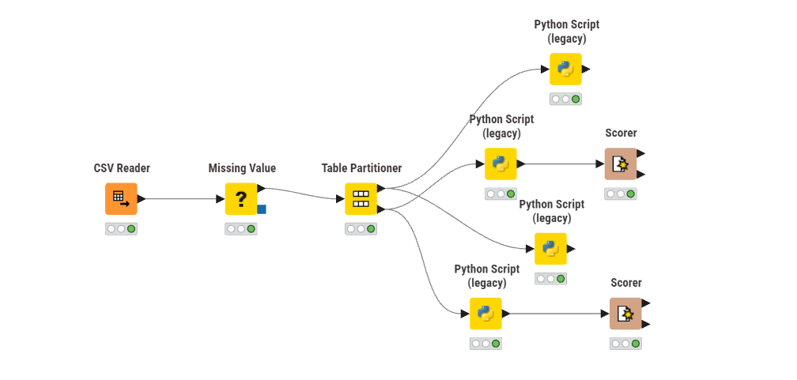
4. Penjelasan Node pada Workflow KNIME#
Dalam workflow KNIME yang digunakan pada penelitian ini terdapat beberapa node utama yang berfungsi untuk membantu proses analisis data dan pembangunan model klasifikasi menggunakan algoritma Decision Tree dan Random Forest. Setiap node memiliki peran masing-masing mulai dari membaca dataset, mengolah data, membagi data training dan testing, melakukan prediksi, hingga mengevaluasi performa model.
Node-node yang digunakan pada workflow ini bekerja secara berurutan sehingga proses klasifikasi dapat berjalan dengan baik dan menghasilkan prediksi yang lebih akurat terhadap data diabetes.
A. CSV Reader#
Node CSV Reader digunakan untuk membaca dataset Diabetes yang berformat .csv ke dalam workflow KNIME. Pada node ini dataset diambil dari lokasi penyimpanan file kemudian seluruh atribut dan data akan ditampilkan dalam bentuk tabel.
Dataset yang digunakan memiliki total 768 baris data dan 9 atribut yang terdiri dari atribut input serta target klasifikasi diabetes.
Atribut yang terbaca pada dataset antara lain:
Pregnancies, Glucose, BloodPressure, SkinThickness,
Insulin, BMI, DiabetesPedigreeFunction, Age, Outcome
Node CSV Reader menjadi tahap awal dalam workflow karena seluruh proses preprocessing, training, testing, dan evaluasi model akan menggunakan data yang dibaca dari node ini.
Berikut tampilan node CSV Reader pada KNIME:
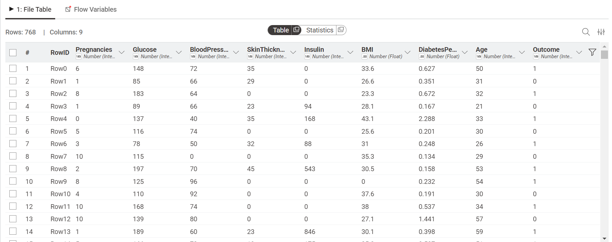
B. Missing Value#
Node Missing Value digunakan untuk memeriksa dan menangani data yang kosong atau missing value pada dataset Diabetes sebelum dilakukan proses training dan testing model.
Berdasarkan hasil pemeriksaan pada node Missing Value, seluruh atribut pada dataset memiliki nilai missing value sebesar 0, sehingga tidak ditemukan data kosong pada dataset yang digunakan. Hal ini menunjukkan bahwa dataset sudah lengkap dan dapat langsung digunakan pada proses klasifikasi menggunakan algoritma Decision Tree dan Random Forest.
Contoh hasil pemeriksaan data pada node Missing Value:
Jumlah data : 768 baris
Jumlah atribut : 9 kolom
Missing value : 0 pada seluruh atribut
Berikut tampilan node Missing Value pada KNIME:
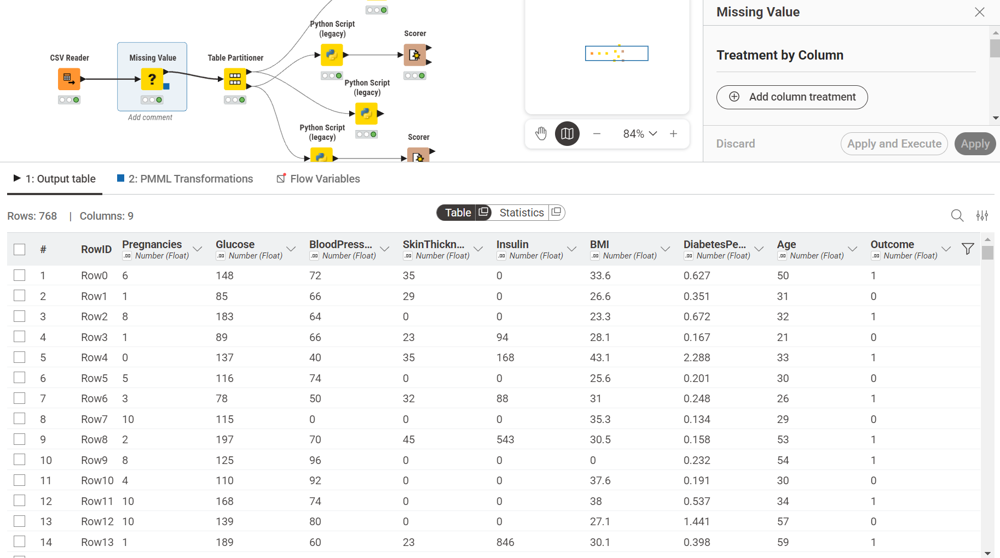
C. Table Partitioner#
Node Table Partitioner digunakan untuk membagi dataset menjadi data training dan data testing sebelum dilakukan proses klasifikasi menggunakan algoritma Decision Tree dan Random Forest.
Pada penelitian ini digunakan metode pembagian data Relative (%) dengan persentase:
80% = Data Training
20% = Data Testing
Proses pembagian data dilakukan menggunakan metode Random Sampling sehingga data dipilih secara acak agar model dapat melakukan proses pembelajaran dengan lebih baik. Selain itu digunakan juga fitur Fixed Random Seed dengan nilai 31 agar hasil pembagian data tetap konsisten setiap workflow dijalankan kembali.
Hasil pembagian data menghasilkan:
Data Training : 614 baris data
Data Testing : 154 baris data
Data training digunakan untuk proses pelatihan model Decision Tree dan Random Forest, sedangkan data testing digunakan untuk menguji performa model dalam memprediksi diabetes berdasarkan data pasien.
Berikut tampilan konfigurasi serta hasil pembagian data pada node Table Partitioner:
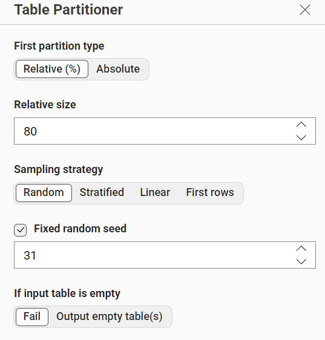
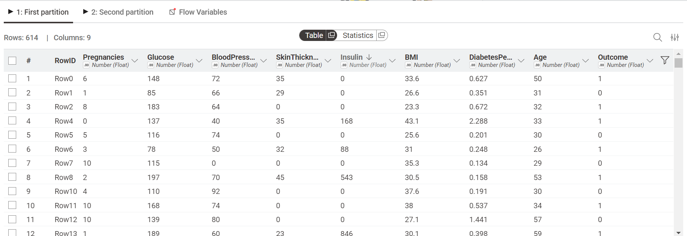
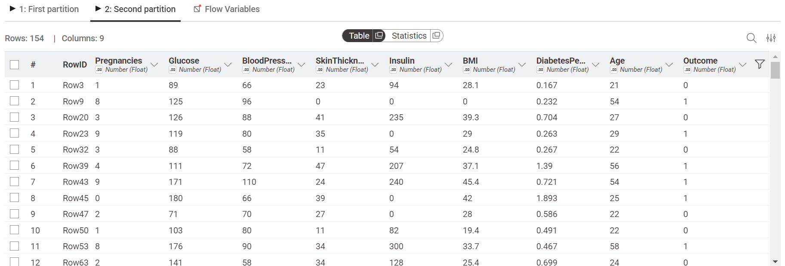
D. Decision Tree Training dan Testing#
Pada bagian ini digunakan node Python Script (Legacy) untuk melakukan proses training dan testing menggunakan algoritma Decision Tree pada dataset Diabetes.
Node Decision Tree Training + Pickle digunakan untuk membangun model klasifikasi Decision Tree berdasarkan data training yang telah dibagi sebelumnya menggunakan node Table Partitioner. Pada proses ini model akan mempelajari pola dari data pasien untuk menentukan kemungkinan seseorang memiliki diabetes atau tidak. Model yang telah dibuat kemudian disimpan dalam bentuk file pickle (.pkl) agar dapat digunakan kembali pada proses testing.
Selanjutnya node Decision Tree Testing digunakan untuk melakukan prediksi terhadap data testing menggunakan model Decision Tree yang telah dibuat sebelumnya. Hasil prediksi kemudian dikirim ke node Scorer untuk dilakukan evaluasi performa model menggunakan confusion matrix dan nilai akurasi.
1. Python Script Training Decision Tree#
Node Python Script Training Decision Tree digunakan untuk melatih model Decision Tree menggunakan data training dari Table Partitioner.
Pada node ini, data training dari KNIME diambil ke Python, kemudian dilakukan pembersihan nama kolom, pengecekan target, pemisahan antara fitur dan target, konversi data ke bentuk numerik, pengisian nilai kosong, proses training model, dan penyimpanan model menggunakan pickle.
Kode lengkap yang digunakan:
import pandas as pd
import pickle
from sklearn.tree import DecisionTreeClassifier
# Ambil data dari KNIME
df = input_table_1.copy()
# Bersihkan nama kolom
df.columns = df.columns.str.strip()
# Hapus data kosong pada Outcome
df = df.dropna(subset=["Outcome"])
# Pastikan Outcome berupa angka
df["Outcome"] = pd.to_numeric(df["Outcome"], errors="coerce")
df = df.dropna(subset=["Outcome"])
df["Outcome"] = df["Outcome"].astype(int)
# Pisahkan fitur dan target
X_train = df.drop(columns=["Outcome"])
y_train = df["Outcome"]
# Ubah semua fitur menjadi numerik
X_train = X_train.apply(pd.to_numeric, errors="coerce")
# Isi missing value dengan mean
X_train = X_train.fillna(X_train.mean())
print("Jumlah data tiap kelas:")
print(y_train.value_counts())
# Membuat model Decision Tree
model = DecisionTreeClassifier(
criterion="gini",
random_state=42
)
# Training model
model.fit(X_train, y_train)
# Simpan model
with open("decision_tree_diabetes.pkl", "wb") as file:
pickle.dump(model, file)
print("Model Decision Tree berhasil disimpan!")
# Output ke KNIME
output_table_1 = df
Pada kode tersebut, kolom Outcome digunakan sebagai label klasifikasi, sedangkan atribut lainnya seperti Pregnancies, Glucose, BloodPressure, SkinThickness, Insulin, BMI, DiabetesPedigreeFunction, dan Age digunakan sebagai fitur untuk melatih model Decision Tree.
Penjelasan Kode Python Script Training Decision Tree#
import pandas as pd
Digunakan untuk mengolah dan memanipulasi data dalam bentuk tabel atau dataframe.
import pickle
Digunakan untuk menyimpan model machine learning ke dalam file .pkl agar dapat digunakan kembali saat proses testing.
from sklearn.tree import DecisionTreeClassifier
Digunakan untuk memanggil algoritma Decision Tree dari library scikit-learn.
df = input_table_1.copy()
Mengambil data dari KNIME ke Python kemudian menyalinnya ke dalam variabel df.
df.columns = df.columns.str.strip()
Digunakan untuk menghapus spasi kosong pada nama kolom agar tidak terjadi error saat pemanggilan atribut.
df = df.dropna(subset=["Outcome"])
Menghapus baris data yang memiliki nilai kosong pada kolom Outcome.
df["Outcome"] = pd.to_numeric(df["Outcome"], errors="coerce")
Mengubah data pada kolom Outcome menjadi tipe numerik.
df = df.dropna(subset=["Outcome"])
Menghapus kembali data yang gagal dikonversi menjadi numerik.
df["Outcome"] = df["Outcome"].astype(int)
Mengubah tipe data Outcome menjadi integer.
X_train = df.drop(columns=["Outcome"])
Digunakan untuk mengambil seluruh atribut selain Outcome sebagai data fitur training.
y_train = df["Outcome"]
Digunakan untuk mengambil kolom Outcome sebagai label klasifikasi.
X_train = X_train.apply(pd.to_numeric, errors="coerce")
Mengubah seluruh data fitur menjadi numerik agar dapat diproses oleh algoritma Decision Tree.
X_train = X_train.fillna(X_train.mean())
Mengisi nilai kosong pada data fitur menggunakan nilai rata-rata setiap kolom.
model = DecisionTreeClassifier(criterion="gini", random_state=42)
Membuat model Decision Tree menggunakan metode pemisahan gini dan random state sebesar 42 agar hasil training tetap konsisten.
model.fit(X_train, y_train)
Digunakan untuk melatih model Decision Tree menggunakan data training dan target.
with open("decision_tree_diabetes.pkl", "wb") as file: pickle.dump(model, file)
Digunakan untuk menyimpan model Decision Tree yang telah dilatih ke dalam file decision_tree_diabetes.pkl.
output_table_1 = df
Mengirim kembali dataframe ke output KNIME agar dapat digunakan pada node berikutnya.
2. Python Script Testing Decision Tree#
Node Python Script Testing Decision Tree digunakan untuk memanggil model Decision Tree yang sudah disimpan sebelumnya, kemudian melakukan prediksi pada data testing dari Table Partitioner.
Pada node ini, data testing dari KNIME diambil ke Python, lalu dipisahkan antara atribut fitur dan target. Setelah itu, model Decision Tree yang tersimpan dalam file decision_tree_diabetes.pkl dibuka kembali menggunakan pickle untuk melakukan proses prediksi.
Kode lengkap yang digunakan:
import pandas as pd
import pickle
# Ambil data testing dari KNIME
df = input_table_1.copy()
# Bersihkan nama kolom
df.columns = df.columns.str.strip()
# Hapus data kosong
df = df.dropna(subset=["Outcome"])
# Pastikan Outcome numerik
df["Outcome"] = pd.to_numeric(df["Outcome"], errors="coerce")
df = df.dropna(subset=["Outcome"])
df["Outcome"] = df["Outcome"].astype(int)
# Pisahkan fitur dan target
X_test = df.drop(columns=["Outcome"])
y_test = df["Outcome"]
# Ubah fitur menjadi numerik
X_test = X_test.apply(pd.to_numeric, errors="coerce")
# Isi missing value
X_test = X_test.fillna(X_test.mean())
# Load model
with open("decision_tree_diabetes.pkl", "rb") as file:
model = pickle.load(file)
print("Model berhasil dibuka!")
# Prediksi
y_pred = model.predict(X_test)
# Hasil output ke KNIME
output_table_1 = pd.DataFrame({
"Actual": y_test.values,
"Prediction": y_pred
})
print("Prediksi berhasil dilakukan!")
Hasil dari node ini berupa tabel yang berisi kolom Actual dan Prediction. Kolom Actual menunjukkan nilai target asli dari data testing, sedangkan kolom Prediction menunjukkan hasil prediksi dari model Decision Tree.
3. Scorer Decision Tree#
Node Scorer Decision Tree digunakan untuk mengevaluasi hasil prediksi dari model Decision Tree. Node ini membandingkan nilai asli pada data testing dengan hasil prediksi yang dihasilkan oleh model.
Pada node Scorer, kolom yang dibandingkan adalah:
First column = Actual
Second column = Prediction
Output dari node Scorer berupa confusion matrix dan statistik evaluasi model. Berdasarkan hasil evaluasi, diperoleh:
Confusion Matrix Decision Tree
Actual \ Prediction |
0 |
1 |
|---|---|---|
0 |
73 |
31 |
1 |
20 |
30 |
Hasil evaluasi:
Metrik |
Nilai |
|---|---|
True Positive (kelas 0) |
73 |
False Positive (kelas 0) |
20 |
True Negative (kelas 0) |
30 |
False Negative (kelas 0) |
31 |
Recall (kelas 0) |
0.702 |
Precision (kelas 0) |
0.785 |
Sensitivity (kelas 0) |
0.702 |
Specificity (kelas 0) |
0.600 |
F-measure (kelas 0) |
0.741 |
Accuracy (Overall) |
0.669 |
Cohen’s Kappa |
0.286 |
Confusion matrix menunjukkan bahwa dari total 154 data testing, model Decision Tree berhasil mengklasifikasikan 103 data dengan benar dan terdapat 51 data yang diprediksi salah.
Berikut tampilan konfigurasi dan hasil evaluasi pada node Scorer Decision Tree:
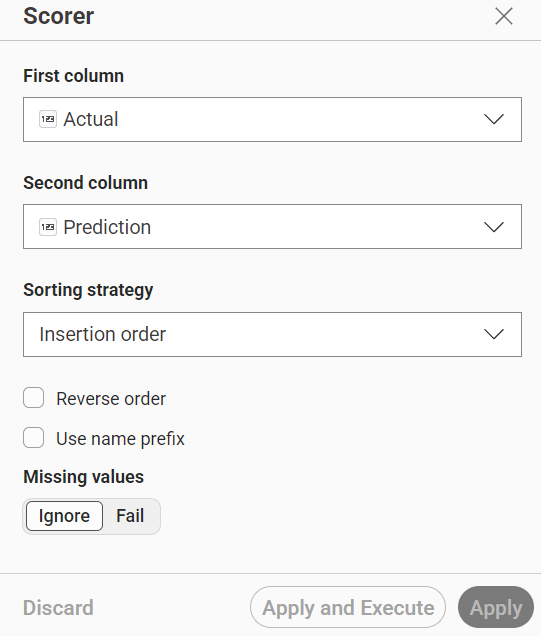
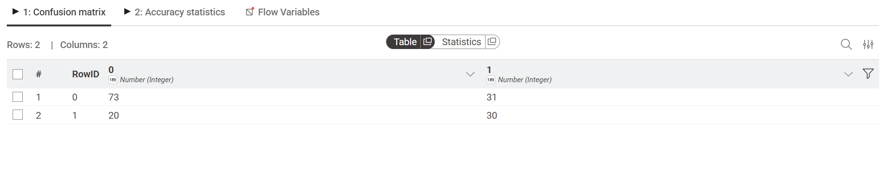
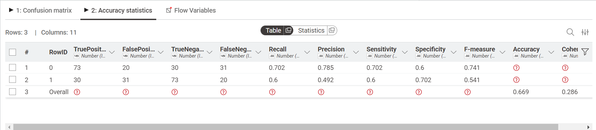
E. Node Random Forest#
Bagian Random Forest digunakan untuk membangun model klasifikasi menggunakan algoritma Random Forest pada dataset Diabetes.
Pada proses ini dilakukan training dan testing model untuk memprediksi kemungkinan pasien mengalami diabetes berdasarkan data kesehatan pasien.
Model Random Forest bekerja dengan menggabungkan beberapa decision tree sehingga hasil prediksi menjadi lebih stabil dan memiliki tingkat akurasi yang lebih baik.
Pada bagian Random Forest terdapat tiga node utama yaitu:
Python Script Training Random Forest digunakan untuk melatih model Random Forest menggunakan data training
Python Script Testing Random Forest digunakan untuk melakukan prediksi pada data testing
Scorer Random Forest digunakan untuk mengevaluasi hasil prediksi model menggunakan confusion matrix dan nilai akurasi
1. Python Script Training Random Forest#
Node Python Script Training Random Forest digunakan untuk melatih model Random Forest menggunakan data training dari Table Partitioner.
Pada node ini, data training dari KNIME diambil ke Python kemudian dilakukan preprocessing data seperti pembersihan nama kolom, pengecekan target, konversi data menjadi numerik, penanganan missing value, proses training model Random Forest, serta penyimpanan model menggunakan pickle.
Kode lengkap yang digunakan:
import pandas as pd
import pickle
from sklearn.ensemble import RandomForestClassifier
# Ambil data dari KNIME
df = input_table_1.copy()
# Bersihkan nama kolom
df.columns = df.columns.str.strip()
# Hapus data kosong pada Outcome
df = df.dropna(subset=["Outcome"])
# Pastikan Outcome berupa angka bulat 0/1
df["Outcome"] = pd.to_numeric(df["Outcome"], errors="coerce")
df = df.dropna(subset=["Outcome"])
df["Outcome"] = df["Outcome"].astype(int)
# Pisahkan fitur dan target
X_train = df.drop(columns=["Outcome"])
y_train = df["Outcome"]
# Ubah semua fitur menjadi numerik
X_train = X_train.apply(pd.to_numeric, errors="coerce")
# Isi missing value dengan mean
X_train = X_train.fillna(X_train.mean())
# Cek isi target
print("Nilai target:")
print(y_train.value_counts())
# Membuat model Random Forest
model = RandomForestClassifier(
n_estimators=100,
criterion="gini",
random_state=42
)
# Training model
model.fit(X_train, y_train)
# Simpan model
with open("random_forest_diabetes.pkl", "wb") as file:
pickle.dump(model, file)
print("Model berhasil disimpan sebagai random_forest_diabetes.pkl")
# Output data training
output_table_1 = df
Pada kode tersebut, kolom Outcome digunakan sebagai label klasifikasi, sedangkan atribut lainnya seperti Pregnancies, Glucose, BloodPressure, SkinThickness, Insulin, BMI, DiabetesPedigreeFunction, dan Age digunakan sebagai fitur untuk melatih model Random Forest.
Penjelasan Kode Python Script Training Random Forest#
import pandas as pd
Digunakan untuk mengolah dan memanipulasi data dalam bentuk dataframe atau tabel.
import pickle
Digunakan untuk menyimpan model machine learning ke dalam file .pkl agar dapat digunakan kembali saat proses testing.
from sklearn.ensemble import RandomForestClassifier
Digunakan untuk memanggil algoritma Random Forest dari library scikit-learn.
df = input_table_1.copy()
Mengambil data training dari KNIME ke Python kemudian menyalinnya ke dalam variabel df.
df.columns = df.columns.str.strip()
Digunakan untuk menghapus spasi kosong pada nama kolom agar tidak terjadi kesalahan saat pemanggilan atribut.
df = df.dropna(subset=["Outcome"])
Menghapus baris data yang memiliki nilai kosong pada kolom Outcome.
df["Outcome"] = pd.to_numeric(df["Outcome"], errors="coerce")
Mengubah data pada kolom Outcome menjadi tipe numerik.
df = df.dropna(subset=["Outcome"])
Menghapus data yang gagal dikonversi menjadi numerik.
df["Outcome"] = df["Outcome"].astype(int)
Mengubah tipe data Outcome menjadi integer.
X_train = df.drop(columns=["Outcome"])
Digunakan untuk mengambil seluruh atribut selain kolom Outcome sebagai data fitur training.
y_train = df["Outcome"]
Digunakan untuk mengambil kolom Outcome sebagai label klasifikasi.
X_train = X_train.apply(pd.to_numeric, errors="coerce")
Mengubah seluruh data fitur menjadi tipe numerik agar dapat diproses oleh algoritma Random Forest.
X_train = X_train.fillna(X_train.mean())
Mengisi nilai kosong pada data fitur menggunakan nilai rata-rata setiap kolom.
model = RandomForestClassifier(n_estimators=100, criterion="gini", random_state=42)
Digunakan untuk membuat model Random Forest dengan:
n_estimators=100→ jumlah decision tree sebanyak 100criterion="gini"→ metode perhitungan pemisahan menggunakan gini indexrandom_state=42→ agar hasil training tetap konsisten setiap dijalankan
model.fit(X_train, y_train)
Digunakan untuk melatih model Random Forest menggunakan data training dan target klasifikasi.
with open("random_forest_diabetes.pkl", "wb") as file: pickle.dump(model, file)
Digunakan untuk menyimpan model Random Forest yang telah dilatih ke dalam file random_forest_diabetes.pkl.
output_table_1 = df
Mengirim kembali dataframe ke output KNIME agar dapat digunakan pada node berikutnya.
2. Python Script Testing Random Forest#
Node Python Script Testing Random Forest digunakan untuk memanggil model Random Forest yang sudah disimpan sebelumnya, kemudian melakukan prediksi pada data testing dari Table Partitioner.
Pada node ini, data testing dari KNIME diambil ke Python lalu dilakukan preprocessing data seperti pembersihan nama kolom, pemisahan fitur dan target, konversi data menjadi numerik, serta pemanggilan model Random Forest menggunakan file pickle untuk melakukan proses prediksi.
Kode lengkap yang digunakan:
import pandas as pd
import pickle
# Ambil data testing dari KNIME
df = input_table_1.copy()
# Bersihkan nama kolom
df.columns = df.columns.str.strip()
# Hapus data kosong
df = df.dropna(subset=["Outcome"])
# Pastikan Outcome numerik
df["Outcome"] = pd.to_numeric(df["Outcome"], errors="coerce")
df = df.dropna(subset=["Outcome"])
df["Outcome"] = df["Outcome"].astype(int)
# Pisahkan fitur dan target
X_test = df.drop(columns=["Outcome"])
y_test = df["Outcome"]
# Ubah fitur menjadi numerik
X_test = X_test.apply(pd.to_numeric, errors="coerce")
# Isi missing value
X_test = X_test.fillna(X_test.mean())
# Load model
with open("random_forest_diabetes.pkl", "rb") as file:
model = pickle.load(file)
print("Model berhasil dibuka!")
# Prediksi
y_pred = model.predict(X_test)
# Hasil output ke KNIME
output_table_1 = pd.DataFrame({
"Actual": y_test.values,
"Prediction": y_pred
})
print("Prediksi Random Forest berhasil dilakukan!")
Hasil dari node ini berupa tabel yang berisi kolom Actual dan Prediction. Kolom Actual menunjukkan nilai target asli dari data testing, sedangkan kolom Prediction menunjukkan hasil prediksi dari model Random Forest.
Penjelasan Kode Python Script Testing Random Forest#
import pandas as pd
Digunakan untuk mengolah data dalam bentuk dataframe atau tabel.
import pickle
Digunakan untuk membuka model Random Forest yang sebelumnya telah disimpan dalam file .pkl.
df = input_table_1.copy()
Mengambil data testing dari KNIME ke Python kemudian menyalinnya ke dalam variabel df.
df.columns = df.columns.str.strip()
Digunakan untuk menghapus spasi kosong pada nama kolom agar tidak terjadi kesalahan saat proses pemanggilan atribut.
X_test = df.drop(columns=["Outcome"])
Digunakan untuk mengambil seluruh atribut selain kolom Outcome sebagai data fitur testing.
y_test = df["Outcome"]
Digunakan untuk mengambil kolom Outcome sebagai nilai aktual atau target asli.
X_test = X_test.apply(pd.to_numeric, errors="coerce")
Mengubah seluruh data fitur menjadi tipe numerik agar dapat diproses oleh model Random Forest.
X_test = X_test.fillna(X_test.mean())
Mengisi nilai kosong pada data testing menggunakan nilai rata-rata setiap kolom.
with open("random_forest_diabetes.pkl", "rb") as file: model = pickle.load(file)
Digunakan untuk membuka dan memanggil model Random Forest yang telah disimpan sebelumnya dalam file random_forest_diabetes.pkl.
y_pred = model.predict(X_test)
Digunakan untuk melakukan proses prediksi menggunakan model Random Forest terhadap data testing.
output_table_1 = pd.DataFrame({"Actual": y_test.values, "Prediction": y_pred})
Membuat tabel hasil prediksi yang berisi:
Actual = nilai target asli dari data testing
Prediction = hasil prediksi model Random Forest
3. Scorer Random Forest#
Node Scorer Random Forest digunakan untuk mengevaluasi hasil prediksi dari model Random Forest. Node ini membandingkan nilai asli pada data testing dengan hasil prediksi yang dihasilkan oleh model.
Pada node Scorer, kolom yang dibandingkan adalah:
First column = Actual
Second column = Prediction
Output dari node Scorer berupa confusion matrix dan statistik evaluasi model. Berdasarkan hasil evaluasi, diperoleh:
Confusion Matrix Random Forest
Actual \ Prediction |
0 |
1 |
|---|---|---|
0 |
isi dari ss kamu |
isi dari ss kamu |
1 |
isi dari ss kamu |
isi dari ss kamu |
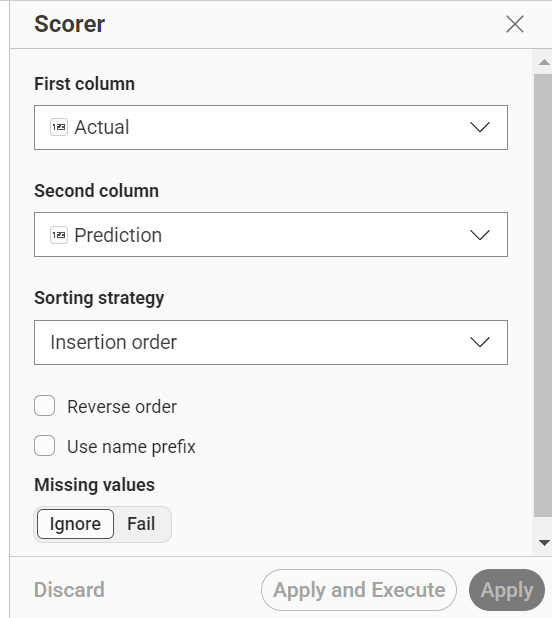
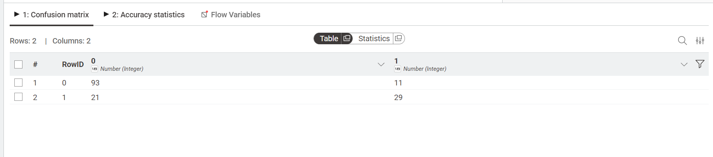
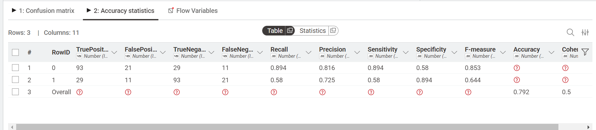
5. Perbandingan Hasil Decision Tree dan Random Forest#
Pada penelitian ini dilakukan perbandingan performa antara algoritma Decision Tree dan Random Forest dalam memprediksi penyakit diabetes pada dataset Diabetes. Perbandingan dilakukan berdasarkan hasil evaluasi menggunakan node Scorer pada KNIME.
5.1 Hasil Evaluasi Decision Tree#
Berdasarkan hasil evaluasi menggunakan confusion matrix, model Decision Tree memperoleh hasil sebagai berikut:
Confusion Matrix Decision Tree
Actual \ Prediction |
0 |
1 |
|---|---|---|
0 |
73 |
31 |
1 |
20 |
30 |
Hasil evaluasi:
Correct classified : 103
Wrong classified : 51
Accuracy : 66.9%
Error : 33.1%
Cohen’s Kappa : 0.286
5.2 Hasil Evaluasi Random Forest#
Berdasarkan hasil evaluasi menggunakan confusion matrix, model Random Forest memperoleh hasil sebagai berikut:
Confusion Matrix Random Forest
Actual \ Prediction |
0 |
1 |
|---|---|---|
0 |
93 |
11 |
1 |
21 |
29 |
Hasil evaluasi:
Correct classified : 122
Wrong classified : 32
Accuracy : 79.2%
Error : 20.8%
Cohen’s Kappa : 0.500
5.3 Tabel Perbandingan#
Algoritma |
Correct Classified |
Wrong Classified |
Accuracy |
Error |
Cohen’s Kappa |
|---|---|---|---|---|---|
Decision Tree |
103 |
51 |
66.9% |
33.1% |
0.286 |
Random Forest |
122 |
32 |
79.2% |
20.8% |
0.500 |
5.4 Analisis Hasil#
Berdasarkan hasil pengujian, algoritma Decision Tree dan Random Forest menghasilkan performa yang berbeda pada dataset Diabetes. Algoritma Random Forest berhasil mengklasifikasikan 122 data dengan benar dan menghasilkan 32 kesalahan prediksi dari total 154 data testing. Sedangkan algoritma Decision Tree hanya berhasil mengklasifikasikan 103 data dengan benar dan menghasilkan 51 kesalahan prediksi.
Nilai akurasi Random Forest sebesar 79.2% menunjukkan bahwa model memiliki performa yang lebih baik dibandingkan Decision Tree yang hanya memperoleh akurasi sebesar 66.9%. Selain itu, nilai error Random Forest lebih rendah yaitu sebesar 20.8%, sedangkan Decision Tree memiliki error sebesar 33.1%.
Nilai Cohen’s Kappa pada Random Forest sebesar 0.500 menunjukkan tingkat kesesuaian prediksi model yang lebih baik dibandingkan Decision Tree yang hanya memperoleh nilai Cohen’s Kappa sebesar 0.286.
6. Kesimpulan#
Berdasarkan hasil perbandingan yang telah dilakukan, algoritma Random Forest menghasilkan performa yang lebih baik dibandingkan algoritma Decision Tree pada dataset Diabetes. Random Forest memperoleh nilai akurasi yang lebih tinggi dan nilai error yang lebih rendah dibandingkan Decision Tree sehingga lebih baik digunakan untuk melakukan prediksi penyakit diabetes.